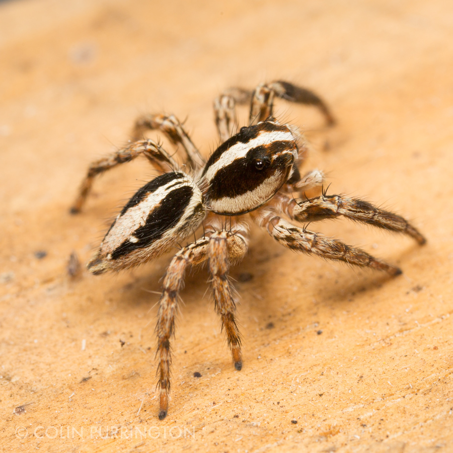
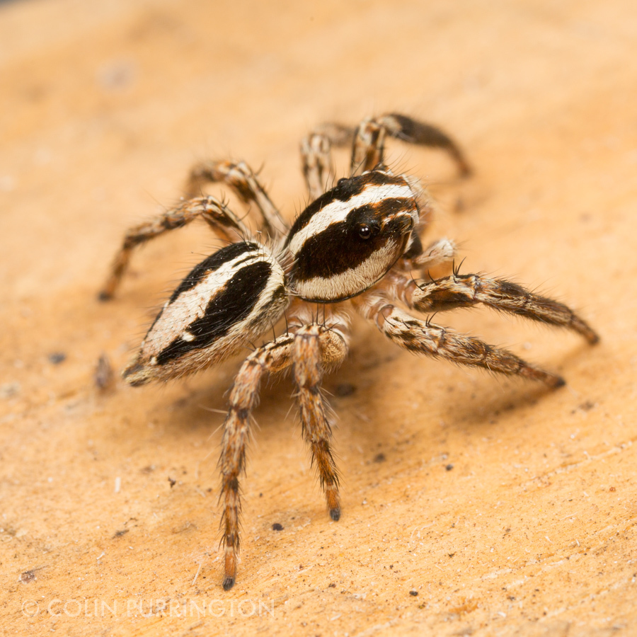

¡Araña Saltarina!
¿Que es una araña SALTARINA!!
Las arañas saltarinas son una de las familias de arañas más grandes, y representan aproximadamente un 13 por ciento de todas las especies.
 
Algo más sobre las Arañas Saltarinas es que Son cortas y gruesas, y en general se mueven de manera relativamente lenta. Sin embargo, se los conoce por ser capaces de saltar con extrema agilidad, especialmente cuando cazan. Algunas arañas saltarinas pueden saltar de 10 a 50 veces la longitud de su cuerpo.